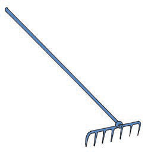
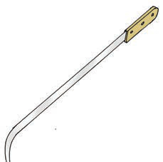
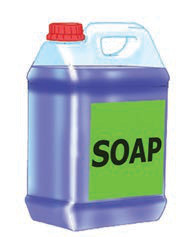
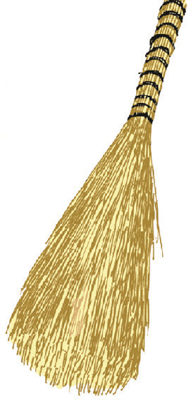
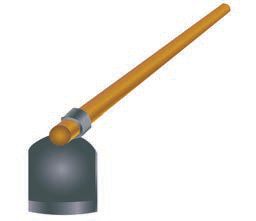
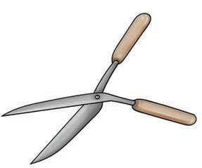
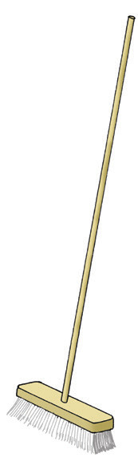

(a)
A rake with a long handle and metal teeth.

(b)
A crowbar with a wooden handle.

(c)
A container of liquid soap.

(d)
A straw broom for sweeping.

(e)
A blue cleaning cloth.

(f)
A hoe with a long handle.

(g)
A pair of hedge shears for cutting plants.

(h)
A long-handled brush for cleaning the floor.